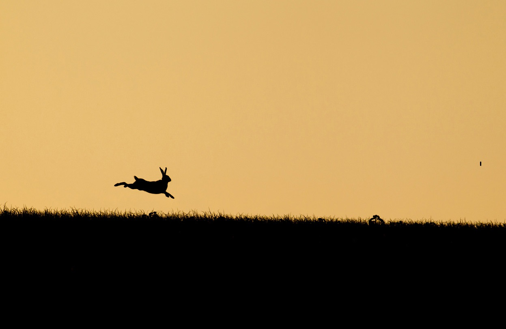

파카(PAKA)
前 카카오TV PD, 現 트위치 스트리머로 후원이 없던 다음팟에서 2013년부터 방송을 시작했고 약 5년 동안 마이크 없이 방송을 했었다.
카오스, 아키에이지, 2012년~2014년 리그 오브 레전드, 2016년 오버워치, 2017년~2018년 배틀그라운드 등 그 해에 가장 인기를 끌었던 게임마다 파고들면 최상위권을 달성할 정도로 여러 게임을 잘해서 유명해졌다. 한때 유행한 리그 오브 레전드 유명 플레이어 관전방에서 파카 관전하기 vs 페이커 관전하기 나오면 백이면 백 전자를 선택할 정도로 도파나 일부 홈쇼핑 광고를 제외하면 파카가 항상 팟통령을 점령하였다. 그 인기를 증명하듯 tv팟의 유일무이한 팟국가를 탄생시켰다.
방송 시간과 요일은 순수하게 랜덤이다. 새벽 4시가 넘어서 켤 때도 있고 방송 시간 또한 내키는 데까지 하는 편이다. 평균적으로는 4~5시간 정도 하며 길면 7~8시간 정도이다. 다만 새벽 3시 전에 방송을 끄는 규칙은 있다고 한다. 본인이 채팅방 관리를 못한다는 것이 그 이유. 주로 리그 오브 레전드를 플레이하며 배틀그라운드나 스팀 패키지 게임, 다른 온라인 게임을 방송한다.